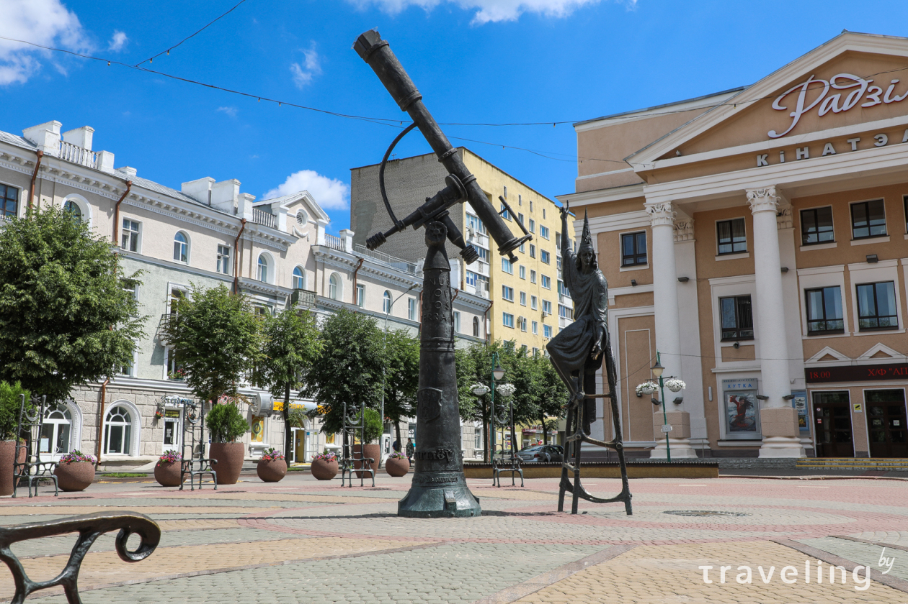
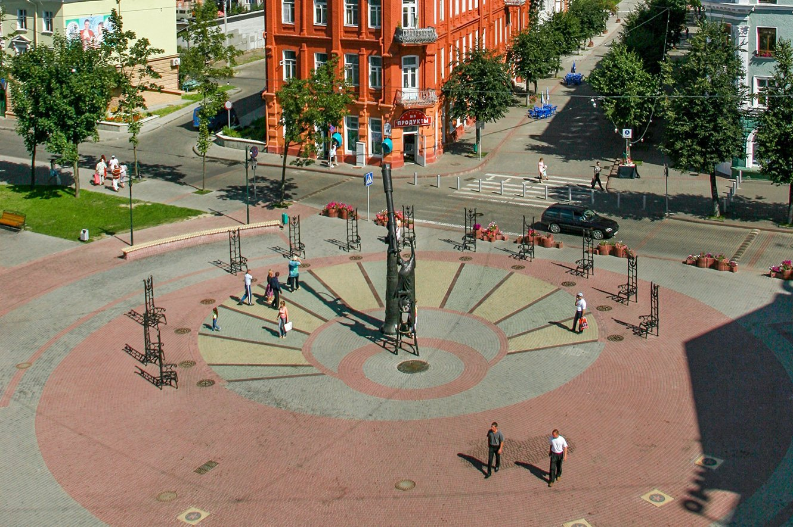

.
Площадь звёзд

Раньше здесь были обычные солнечные часы, которые представляли собой
большую наклонную трубу в центре циферблата. Но руководству города
захотелось как-то разнообразить это место, сделать его уникальным –
визитной карточкой Могилева. Кому-то в голову пришла идея подключить к
этому делу минского архитектора Владимира Жбанова (к сожалению, он уже
скончался). Владимир Жбанов – автор удивительно-добрых и милых скульптур,
которые можно видеть на улицах белорусских городов. Среди самых известных
его работ – Дама с собачкой, Экипаж, фотограф, Станционный смотритель и
многие другие.

Площадь Звезд – гордость города. Скульптор подошел к делу творчески – и на
свет появился удивительный ансамбль: звездочет, который смотрит в большой
телескоп. Семиметровый звездочет сидит на высоком стуле и смотрит в
четырехметровый телескоп. Скульптура очень высокая, говорят, ее видно даже
из космоса, когда ночью включается искусно сделанная подсветка. Телескоп
является гномоном – стрелкой-указателем солнечных часов. Вокруг Звездочета
стоят двенадцать кресел – по одному на каждый знак зодиака.